Десять дней, которые потрясли...
Долина Вулканов – Пик Топографов, август 2006
День первый
…мы строили, строили – и наконец построили!..
© Чебурашка
It’s been a hard day’s night…
© The Beatles
Больше восьми часов за рулем, без малого пятьсот километров, из них
примерно двести – по грунтовке. В результате всех дорожных перипетий,
включая отвинтившуюся у Юры на ходу торпеду (форева автопром родной
страны!), в семь вечера с копейками семнадцатого августа мы достигли
Орлика.
Команда: Юра (он же strigun), Юля (она же hewlett), Наташа, Аня, Оля и я
(Galmir), да плюс еще трое велосипедистов с транспортом, на двух машинах,
с кучей рюкзаков и двумя объемистыми пакетами еды в багажнике россыпью.
Слайд номер один: договоренность о заброске была со специально обученным
мужиком по имени Баир Нарсанов. Когда я спросил, где его в Орлике искать,
в ответ легкомысленно прозвучало: «А вы любого спросите – вам сразу же
покажут!». Сказано – сделано: первых встречных деффачек в Орлике мы
спросили, где найти Баира Нарсанова. Деффачки сделали круглые лица и
ответили в том смысле, что /вырезано цензурой/, кто такой Баир, и где его
искать. В конечном итоге на заправке было выяснено, что где-то в недрах
Орлика есть асфальт, а по обе стороны от него стоят местная школа, местный
клуб, «беленький такой магазин» и дом Баира, «как раз напротив беленького
такого магазина».
Слайд номер два: Баир, критически посмотрев на нас, спросил голосом
сомневающегося Гагарина: «Поехали?»
– сейчас?
– а чего нет?
– а успеем?
– а около болота заночуем…
– /мимически насыщенная пауза/… ну, поехали!
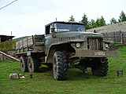 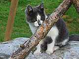
Все это время группа участников облизывает офигенных размеров бортовой
«Урал», на котором и совершалась заброска.
Народ лениво пакуется, на траве разложено невероятное количество
малосъедобной пищи, запчасти от велосипедов, рюкзаки, кошки, веревка и
прочее барахло. В куче барахла местная кошка безошибочно вычисляет
единственный кусок сала и пытается с ним скипнуть. Действие на сцене
оживляется, участники бегают, суматошно ловят кошку, отбирают сало. Кошка
недовольна, но все еще фотогенична и вызывает положенный набор умиленных
звуков…
…В «Формуле-1» заправка происходит быстро. Быстро – это от 6 до 10 секунд.
Заправить «Урал» с двигателем от МАЗа – это вам не на кнопки нажимать, тут
думать надо: ведерком, из бочки, размеренно,
плюх-зачерпнуть-плюх-зачерпнуть- плюх… Примерно через час после начала
процесса, однако, мы все уже упакованы в кузов, машина заводится и со
страшным треском и шумом начинает движение. Мы пока еще не поняли, что это
такое – ехать в кузове «Урала», потому лица довольные и незамутненные :)
Часа через три, миновав мост через Оку, уже в глухой темноте, машина
достигает забора. Заборы попадаются на дороге постоянно. Прожив в этих
местах без малого десять дней, мы так и не смогли понять, какой
экзистенциальный смысл в том, чтобы перегородить дорогу забором и сделать
в нем ворота, но они обычно есть. Этот забор, однако, отличается от
других: нет ворот :) Оказывается, что мы доехали до болота, уперлись в
летник Хутел и сейчас будем тут жить. Жить нам комфортно – домик, речка, в
темноте сверкают чьи-то глаза – то ли собачьи, то ли коровьи, не
разберешь, на небе полно звезд – пастораль, одним словом. Ночью, правда, в
дверь вломился загадочный мужик, уронил на меня седло и заговорил на
непонятном языке. Хорошо, что Баир этим языком владел, так что мужик в
результате канул в ночь, оставив седло и не закрыв дверь достаточно
плотно, чтобы не дуло.
Про еду. Хочешь похудеть – спроси меня, как. Раскладку я считал, исходя из
норм горно-туристического похода 3 к.с., но на пять дней – или Топографов,
или Долина Вулканов. Поскольку нас обещали подвезти под самый перевал
Чойган-Дабан, мы обрадовались и решили, что успеем везде. Отняли,
поделили, раскидали еду на семь дней и радостно легли спать. Надо сказать,
что раскидали достаточно удачно, так как вопросы раскладки нас беспокоили
всего два раза – на въезде, когда раскидывали, и на выезде, когда чуть не
умерли – но об этом позже :) Некоторые участники, правда, постоянно
попрекали меня куском хлеба, называли прилюдно завхозом и прочими
матерными словами, но зато всем легко шлось – а это главное :)
День второй
Если рассудок и жизнь дороги вам, держитесь подальше от торфяных болот!
© Д-р Степлтон, пост от имени анонимного пользователя в ЖЖ Генри
Баскервиля
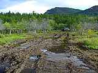 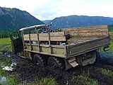 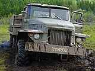
Выезд наметили на восемь. Если я не сильно ошибаюсь, где-то около восьми
первые участники начали выползать из спальников. Тенденция эта сохранилась
до конца похода – никуда, ни разу, ни под каким видом мы не вышли вовремя.
За время начала восхождения на Топографов (если кому интересно, мы приняли
решение идти – и пошли – на гору в двенадцать часов дня) меня бы распяли
поочередно все мои руководители, начиная с Ефима и заканчивая П. О.
Колесовым рука об руку с А.Е. Афанасьевым… Отмазывались перед собой тем,
что-де «отпуск, и вообще мы отдыхаем».
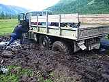 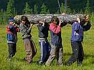 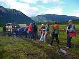
Бодро погрузились, бодро поехали, объехали упомянутый выше забор, доехали
до болота. Болота нынче уродились, это нивапрос – до сих пор не понимаю я
не то, как мы там сели, а то, как мы проехали в конечном итоге!
«Урал» зажужжал, задымился, рванул – и попер. Секунд пятнадцать мы просто
не могли оторваться от видоискателей, потом картинка потеряла динамику:
машина все еще жужжала, дымилась, рвала и даже перла, но с места уже не
двигалась. Мамой я клянусь, что капот стоящего на всех шести лапах «Урала»
находится на уровне моей макушки, так что масштабы события можно оценить
на следующих фотографиях.
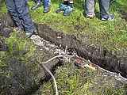 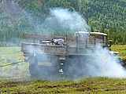 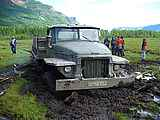 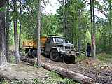
Баир вылез из кабины, меланхолично оглядел топкую полянку вокруг севшего
девайса (до ближайшего дерева – метров сто), и изрек: «П****ц подкрался
незаметно». Закурил, помолчал и добавил: «Но виден был издалека…»
Для вытаскивания нашего механического бегемота применялся метод под
названием «мертвяк». Состоит метод в следующем: в земле необходимо
выкопать яму (желательно – сантиметров сорок). Можно бы и глубже, для
надежности, но на сорока сантиметрах начинается мерзлота и потребен лом),
спилить бревно, размотать трос лебедки и, обернув тросом бревно, заглубить
его в яму посредством пинков, прыжков и самых разных матерей
Примотанный к тросу «Урал» снова зажужжал, задымился, рванул – и попер,
сначала назад, на лебедке, а потом вперед, на энтузиазме. Если быть
честным, я просто не верил, что машина весом в девять тонн может быть
вытащена таким тривиальным способом… а когда земля около бревна
шевелилась, вот это было да :)
«Урал» пер недолго, всего метров сто. Мы еще удивлялись сначала, почему
это он колесами крутит, но не едет, но, подойдя ближе, поняли – есть такой
цикл, do…while называется :)
Короче говоря, аппарат снова сел, и значительно бодрее, чем в прошлый раз.
А надо сказать, что на обратном пути этот же «Урал» должен был везти
группу москвичей в Орлик, и стояла группа москвичей как раз на траверзе
нашего пепелаца, подающего дымовые сигналы из глубин болотной почвы. Еще
на стадии закапывания первого бревна парни поняли, что сидящий в болоте
транспорт равно бесполезен как для нас, так и для них, и очень здорово
помогли, за что им огромный респект.
Вкопать второе бревно мы не успели, только яму сделали – подошел ЗИЛ-131,
который прокрался по краю болота, давя местную растительность и пиля то,
что не давилось, бензопилой, выдернул наш «Урал», перегрузил нас в кузов и
поехал в Хойто-Гол, а москвичи спаслись и вернулись в Орлик с нашим
многострадальным транспортом.
ЗИЛ тоже пару раз сел, но справился с дальнейшей дорогой на «отлично»,
хотя она бывала весьма и весьма разной…
Плывя по рекам, скребясь по кочкам, ползя по откосам, мы достигли точки,
которая носила гордое название «Улус Хойто-Гол», поставили палатки, выпили
бутылку бальзама «Бурятия», поели и легли спать.
День третий
Танцевали семь самураев по степи, по степи!
Ой, да как они танцевали – все равно все померли!
© А. Туров
GPS форева!
© Strigun
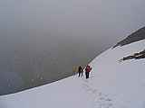 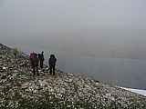 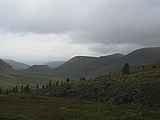
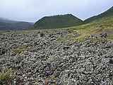 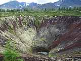 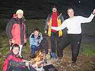
Третий день ничем особенным не выделялся. Как обычно, проспали, как
обычно, был дождь, на перевале, как обычно – снег :) Вообще дней совсем
без дождя было два – когда заезжали, и когда шли пешком под перевал
Чойган-Дабан от Хойто- Гола, все остальное время капало или с большими,
или, что бывало чаще, с маленькими паузами.
Вулкан Перетолчина и панорама долины
Лавовое поле
Дорога от Хойто-Гола до Долины Вулканов заняла, не соврать бы, часов
шесть. Небольшой взлетик до висячей долины, потом по долине к перевалу
Черби, потом сам перевал, похожий на рисовое поле – плоскотина болотистого
толка. Туры расставлены кем-то очень злым, потому что в плохую погоду (а
хорошей мы там не видели) одного тура от другого не заметно, а перевал в
верхней точке представляет из себя офигенных размеров мокрый луг,
испещренный конскими, туристскими и человеческими следами, необъятных – и
не поддающихся оценке, особенно в тумане – размеров. Если бы не GPS и
врожденное чувство направления, до сих пор бы там ходили…
На перевале, для довершения картины, была метель и офигенных размеров
снежник, обрывающийся прямо в озеро – хорошо, что мы все-таки поленились
лезть за кошками и ломить по этому чуду «в лоб», карту оказалось достать
проще :)
Вулкан Перетолчина – кратер
УЖИН, УЖИН!
Первый день завершился триумфальным приходом в Долину Вулканов, для тех,
кому не было лень – подъемом на вулкан Перетолчина, ужином и спасением. В
конечном итоге, ничего особенного мы так и не посмотрели. Утром хотели
пойти на Кропоткина, но для этого решили вставать в семь утра, а встали в
десять, так что – сами понимаете :)
День четвертый
ПРЕВЕД!
© Медвед
…Может быть, это я – Мамаду?
Может быть, я сейчас подойду?
© Манго-Манго
На том, что мы проспали, внимание можно было бы и не заострять… но мы
совершенствовали этот наш могучий скилл. Выход из Долины Вулканов – в
10:45, как сейчас помню.
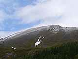 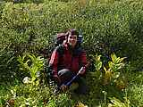 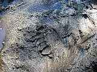
Первым делом мы расслабились, вторым – плутанули, то есть пошли прямиком в
долину реки Барун-Хадарус, «потому что тропа лучше». Слава Богу, вовремя
заметили, зато как бонус поимели пеший переход через лавовое поле. Не так
уж оно и страшно оказалось, а местами даже красиво. Красивости нас
погубили окончательно: вместо того, чтобы идти через реку вброд, стали
искать камушки, по которым ее можно перескакать. Камушки нашли, а
направление на перевал Черби опять потеряли. Минут, наверное, сорок наша
храбрая команда, как минные тральщики в Финском заливе, широкой цепью
брела по кустам. Кусты были в массе своей голубичные, так что продвижение
замедлилось до крайности – по мху, да по колено в этом мхе, да под дождем,
да в гору, да по ягоднику (на нашем-то рационе) – только через час удалось
понять, что мы свернули не на тот ручей, найти нужное направление и
спастись.
На перевале – опять метель, все без изменений. Под перевалом – опять же,
по традиции, уже лето, цветуечки и красивости. Особенно порадовал
нарисованный на сыпухе заяц-плейбой.
Участники согрелись, стали позировать в кустах. Навожу это я фотоаппарат
на живописную Hewlett, как вдруг раздается нервный крик: «АНДРЮХА! ЧЕГО ВСТАЛИ!». Мы, в
непонимании, спрашиваем, типа, а что? А нам кричат: «МЕДВЕДЬ, ***!». Как
щас помню на спиной краткий вздох Hewlett – «П***ц!», и потом – картина
маслом: на тропе, аккурат в ту сторону, куда нам идти, здоровенные такие
лапки. Медвед. Превед, приплыли. До Хойто-Гола – примерно час идти. Где он
там сидит, и чего от жизни хочет, непонятно. Но очень страшно, потому что
сразу хочется к людям, а медвед засел между нами и ними :) Юра,
энергически передвигаясь по тропе: «Андрюха, отцепляй тяпку от рюкзака!».
Я, в некотором обалдении: «Зачем???». Юра, ускоряясь: «Как – зачем? В
чердак его, если что!» В результате до Хойто-Гола добежали меньше, чем за
40 минут. По дороге орали на весь лес «Восьмиклассницу», «Оле, Оле, Оле!»,
«Медвед, ПРЕВЕД» и еще много всего немузыкального. На месте медведа я бы
схарчил нас за одно это шоу, потому что нельзя так, даже в стрессовом
состоянии :)
Прискакав в Хойто-Гол, лежим и обсыхаем. К костру подходит конь, на нем
проводник, в поводу еще один конь, на коне чувак. Чувак подсаживается,
угощает всех чаем (с соблюдением всех – ну, или почти всех, я не знаток –
элементов традиционной чайной церемонии!), и рассказывает о себе: я,
говорит, из Москвы. Меня, говорит, Игорь зовут. Я, говорит, собрался в
долину Вулканов и на пик Топографов, сюда приехал стопом из Слюдянки, а
вообще хотел ехать с группой из Иркутска, да только у них места в машине
не было. А я сижу и смутно припоминаю, что тов. Петухин мне какого-то
москвича сватал, но места в машине действительно не было. Пока я торможу,
Игорь спрашивает: «А не заходила ли тут группа из Иркутска 17 числа сего
месяца?». Народ перебирает встреченных туристов – одни из Уфы, другие
уехали… вроде никого. Пауза. Вопрос, обращенный внутрь: «А мы-то какого
заезжали?». Крик души от Hewlett – «Может быть, это я – Мамаду?». Занавес.
История о том, как Игорь ехал стопом, заслуживает отдельного описания.
Храбрый парень три дня сидел в Слюдянке, ожидая транспорта в Орлик.
Естественно, не дождался, поехал стопом, доехал до Монд. В Мондах его
подобрала «Газель», везущая в Орлик, в магазин, водку… Тут бы можно и
точку поставить, но отдельные перлы все же достойны высечения золотом по
мрамору: «Когда водитель упал…», «Трезвых в машине было двое – я и дочь
водителя. Восьмиклассница…», «Он заглох. Мы стали его толкать. Водитель
зарулил в кювет, по дороге завелся, не обломался – выехал, заглох снова и
сполз задом в тот же кювет», «И, чтобы не побили стекла, мы стали
продавать водку в окно по себестоимости…»
В Хойто-Голе мы, кроме всего прочего, очень креативно поплюхались в
минеральных ваннах – вот такой спортивный отдых мне, черт возьми,
нравится! Спускаешься с заснеженного перевала, ставишь палатку (вокруг уже
лето, травка, цветочки) и падаешь в ванну с температурой воды около 25
градусов… Спалось после таких расслаблений особенно хорошо.
Наутро Игорь ушел в Долину Вулканов, а мы двинули в сторону перевала
Чойган- Дабан, договорившись состыковаться и поехать вместе в Иркутск.
День пятый
Вы все умрете, умрете, проще говоря,
Проще говоря – я очень рад!
© неизвестен, исполнялось Strigun
…и это был очень хороший день!
© трогательная книга рассказов из детства
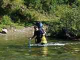 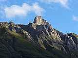 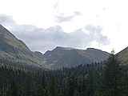 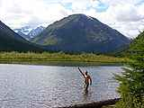
«то место, где долина раздвояйца»
Проспали. Позавтракали. Пошли. Отойдя километра на полтора от Хойто-Гола,
нашли следы медведа. На этот раз отреагировали значительно спокойнее, даже
удалось сфотографировать, не впадая в панику :)
Дошли до поворота дороги, почесали репу и двинулись, посвистывая и радуясь
хорошей погоде, в сторону республики Тыва. По причине избытка храбрости и
силы воли, вместо того, чтобы переходить реку один раз, мы занимались
бродингом раз семь – причем первый раз даже веревку натянули, потому что
было глубоко, холодно и страшно :)
Весь день планомерно продвигались, пока не дошли до зимухи под перевалом
(это мы так думали, что под перевалом, а на самом деле на карте были
обозначены совсем другие домики, от нашего же до начала подъема еще
километра 4-5). Домик знаменит обалденной железной кроватью перед входом,
многократно сросшимся кедром и множественными пейзажами – каменная стенка
напротив. По дороге, забыл сказать, еще было «ну очень холодное озеро» :)
Вечером мнения разделились: часть народа активно требовала «прямо сейчас
бежать вперед, к минеральным ваннам», другая (в лице меня и пары
сомневающихся) хотела переночевать перед перевалом, чтобы не лезть на него
на ночь глядя. Из-за того, что партия «спокойной ночевки» победила,
«партия любителей минеральных вод» получила (и реализовала) право на
реванш, а именно – завтра было решено перескакать перевал Чойган-Дабан и
сразу двинуть в сторону штурмового лагеря под пик Топографов.
Самый расслабленный, самый тихий в психологическом плане день: с утра до
вечера идешь по абсолютно ровной долине, слева – горки и пейзаж, справа –
горки и пейзаж, впереди не особо длинный переход… единственная проблема:
ИМХО хождение по плоской дороге здорово разрушает моск.
День шестой
…И все выше я шел, и дрожали ступени,
И дрожали ступени под ногой у меня…
© К. Бальмонт
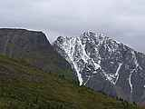 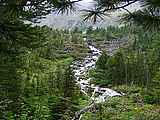 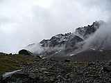
Утро, ты проснулась – а я уже принес тебе голубя! Белого голубя с красными
глазами, толстую пернатую птицу! Несмотря на то, что весь вечер Hewlett
пугала участников рассказами о шаманках, которые обычно похоронены около
таких зимух и по ночам приходят потусить, несмотря даже на очередные
медвежьи следы, мы все равно смогли спать крепко и проспать не меньше, чем
обычно.
По мере поедания запасов рюкзаки легчали, участники крепли, так что пошли
мы даже бодро, с шутками и трепом. Продолжая шутить и трепаться, перешли
первый брод, затем дошли до двух зимушек (именно они на карте и обозначены
как «под перевалом») – нам потом рассказали, что в одной из них бардак, а
вторая необжитая, ночью в нее приходит волосатый мужик и настойчиво
стремиццо попасть в окно. Некоторым даже удается увидеть его хвост после
того, как проснешься… От этих зимушек, на самом деле, идет две тропы. Одна
под перевал (прямо), вторая под прямым углом на водопой. Уж не знаю,
почему мы все уверенно свернули направо, но свернули-таки. Подошли к реке,
переоделись (надо отметить, что каждый брод отнимал минут по 15-20, потому
что это же процесс: надо сесть, снять ботинки, в простом варианте –
нацепить сандалии, в сложном - достать из рюкзака запасные ботинки,
которые уже все равно вымокли и ни на что, кроме бродинга, не годятся,
перейти на другую сторону и повторить все в обратном порядке), переползли.
Сели, оделись-обулись, посмеялись. Затем кто-то задал своевременный
вопрос: «А тропа-то где?»
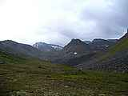 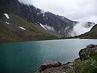
Минут пятнадцать занял процесс ползания по берегу в поисках тропы. Потом
еще минут десять – процесс убеждения себя в том, что надо обратно, в воду.
Еще минут пятнадцать – переход. Час прошел весело и разнообразно :) Тропа
нашлась сразу же…
Перевал Чойган-Дабан отвечает всем требованиям, которые природа
предъявляет к перевалам Центрального Саяна: он плоский, болотистый и
протяженный в пространстве :) По центру долинки, которая изображает собой
перевал, находицца специальная табличка «Республика Тыва» – а сам перевал
(и, следовательно, граница) километрах в полутора от таблички, это не
может не умилять :)
Тыва – край суровый, горный и весь такой фор риал, это стало ясно с самого
начала: как только мы вышли из висячей долинки, слева встал в полный рост
настолько офигенный и страшный с виду гребень, что все участники принялись
изводить мегабайты и метры (в зависимости от носителя, на котором работает
камера) без всякого зазрения совести. Карта и GPS в один голос говорили,
что идти нужно вдоль этого самого гребня…
Под уже привычным дождиком мы спустились в долину к источникам Жойган.
Двое участников (ниц), жалуясь на коленные суставы и качество ботинок,
остались мокнуть в горячей минералке, остальные сбросили лишний газ,
лишнюю еду и ломанули вверх, в сторону цели восхождения – пика Военных
Топографов. Дорога по ущелью, по курумам, мимо потрясающе красивых озер,
вверх и вверх. Снежники меняются цветочными полянами, долины – перевалами
(причем без сброса высоты, это, скорее, не перевалы, а ступени огромной
лестницы).
And she’s buying a stairway to heaven…
Тропа начинается почти от источников, но потом ведет себя совершенно
неадекватно – по дороге назад мы без проблем спустились по отчетливой
дорожке, по дороге туда постоянно упирались в курумник. Для всех желающих
повторить рекомендация – на развилках выбирать вариант «ближе к реке».
После курумника (он же первый взлет от источников) оформляется ущелье,
тропа выравнивается, местами промаркирована какой-то дрянью навроде
полиэтиленовых пакетов :) Напротив виднеется тот самый гребень, водопадики
и прочие красоты…
Уже вечером, сбросив с перевала Чойган-Дабан около 400 метров высоты,
набрав после этого около 750 метров, почти до перевала «Пятиозерный», мы
поставили палатку и с рекордной скоростью вползли внутрь, «есть, есть,
есть и потом спать, спать, спать»…
День седьмой
Господином горных дорог назову тебя –
Облака кружат стаей перед грозой
© Мельница
Я ухожу вослед не знавшим, что значит слово страх…
© Тоже Мельница
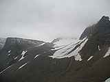 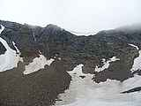 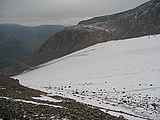
В целях экономии веса снаряжения мы взяли с собой одну палатку – Vertical
Storm 2, по паспорту двухместную. Спали в четыре каски, на боку,
поворачивались по команде – и, несмотря на то, что я впервые в жизни вбил
в землю все колышки, поставил все 4 дуги и палатку мы придавили к земле
основательно, проснулись все равно от характерного стука (град по тенту) и
колебательных движений, совершаемых палаткой под порывами ветра. Несколько
часов (!) участники лениво вставали, лениво одевались, лениво ели и уже
почти смирились с тем, что на гору мы не пойдем. Ближе к обеду, однако,
погода внезапно улучшилась, мы рискнули выглянуть на улицу и как-то
мгновенно перешли в состояние «бегом вверх».
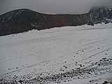 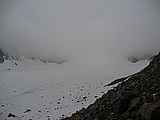 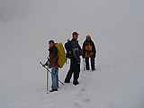
От места стоянки до перевала и спуска с озеру Дэдэ-Хухэ-Нур – минут 20
быстрым шагом. Траверзом по снежничкам, галопом по лугам, с грохотом по
сыпухам, мы взбежали на вершину перевала (непривычно скальную и сухую) и
попытались понять, где мы и куда нам дальше. Гор нет, есть только граница
облачности. GPS показывает направление «в туман и слегка направо», карта с
местностью никак не соотносится :)
Через некоторое время и две сигареты спустя мы пришли если не к пониманию,
то хотя бы к согласию – траверзом с перевала, вдоль склона, потом на
снежник и попробовать выйти на ледник, а там уже или GPS покажет
направление, или местный дух – объект восхождения, или карта наложится на
рельеф. Некоторое время сосредоточенно лезем по крупному курумнику, потом
начинаем ползти по снежному языку, из-за угла показывают цирк и большое
облако, в нем лежащее. Справа, над головой, видно гребень, а над ним –
толстенный ледник.
Начиная с этого момента, и часов на пять вперед кончилось не только лето,
но и осень – только камни и снег. В момент выхода в цирк состоялся диалог:
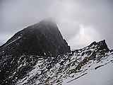 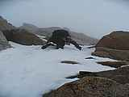 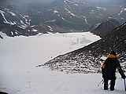
– А не вон туда ли нам надо?
– Фиг знает. Вроде туда. А что?
– А вон там какие лавинные выносы клёвые, смотри!
– ГДЕ???
– Да вон же: первый, второй, третый…
– /вырезано цензурой/!!! А может, не туда?
– Да вот и я думаю…
В конечном итоге стало ясно следующее: мы тупо не дошли до начала ледника
и сразу полезли на снежники соседнего цирка. Ошибка вполне понятная –
вершин не видно вообще, а снизу цирки все одинаковые :) Наша ошибка
обернулась удачей, так как мы проскочили подозрительно потрескавшуюся
нижнюю часть ледника, сохранили метров триста высоты и срезали примерно
двухкилометровый крюк по долине. В нашем соседнем цирке сразу же вдоль
гребня свернули направо, перескочили седловинку и неожиданно выпали прямо
на ледник пика Топографов.
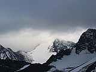
По леднику, нащупывая на всякий случай путь тяпкой, двинули вверх, к
предполагаемому объекту восхождения.
Вершину мы, забегая вперед, не видели ни разу – ни на подъеме, ни когда
почти долезли, ни на спуске, только на фотографиях, которыми была снабжена
карта: низкая облачность свела на нет все красоты, кроме двух (и те
достались Hewlett, потому что я в этот момент очень боялся и не
фотографировал, да еще и очки запотели. Но об этом позже…) Вверх по
леднику мы шли минут двадцать, потом уклон резко возрос, а видимость
пропорционально упала. Примерными абрисами из тумана вырисовывались только
границы кулуара (в основном – правая, вдоль которой мы шли) и ботинки
идущего впереди участника.
Около пяти часов вечера из тумана впереди выступил скальный пояс, от
которого до вершины GPS показал 50 метров по вертикали. Облака немного
разнесло, мы полюбовались на природу, почесали репу, потом Hewlett резонно
сказала: «Ты у нас альпинист, ты и лезь!».
Я бы оценил то, по чему я лез, примерно в 1Б с минусом – несложно, но
противно :) Плиты под снегом, вся фигня… Пролезши метров семь, я
остановился, посмотрел вниз и решил, что с тридцаткой веревки, железом в
виде двух обвязок и двух карабинов, временем 17 часов с копейками и тремя
участниками, незнакомыми с лазанием по заснеженным скалам в кошках лучше
не затевать покорения :) Как оказалось, решение было просто идеально
правильным! Не успели мы пройти десяти метров вниз, как из соседнего цирка
раздался эффектный БАБАХ.
– Что это?!?!
– Лавина, наверное…
– Как нах так нах лавина?!?!
– Ну, блин, лавина как лавина, ты там выносы видел?
– /вырезано цензурой/
Полминуты спустя снова БАБАХ. Я уже начинаю тупить: не могло без особых на
то причин вдруг все поехать. Опять БАБАХ – и все становится ясно: вокруг
мгновенно наступает темень, начинаются молнии, гром и град размером с глаз
среднего участника :) Гроза, однако… Первая мысль, которая у меня возникла
– повернуться к участникам и заорать: «ВНИЗ БЕГОМ!!!»
– А что?
– Не тормозить, ептыть!
– А че будет-то?
– Щас град нагрузит склон, потом в него молния ударит и как все уе****я!
– /вырезано цензурой/
– (хором) БЕЖИМ!!!
Дальше все происходило с головокружительной быстротой. По кромке кулуара
участники скакали вниз, на ходу расстегивая рюкзаки, вокруг гремело, очки
моментально запотели. Попытка снять очки чуть не лишила меня глаза – град
стучал по капюшону и морде так, что заглушал даже маты товарищей по
команде. Добежав до снежного поля, я прицелился вертикально вниз, чтобы
ничего не подрезать, глубоко вдохнул и за считанные секунды домчался до
ледника. Стало ясно, что теперь мы почти спаслись, осталось только отойти
от возможного места расположения лавинного языка, если все-таки кулуар
поедет, и пересечь сам ледник. Кстати, пока мы все, высунув язык, шуршали
вниз по кулуару, Hewlett периодически фотографировала показавшийся
наконец-то пейзаж, мотивируя это тем, что виндстопперные штаны-де «слишком
велики и их требуется поддерживать» :) Первый и крайний раз я видел ледник
именно тогда, во всей его красе.
Перебежка через ледник тоже была своего рода экстремальным ощущением: я
внезапно понял, что там какие-то непонятные места, то ли ручьи, то ли
трещины, и я щупаю их тяпкой. Железной тяпкой – как тополь на Плющихе,
посреди огромного, ровного ледяного поля, в самом центре грозы. Убрал
тяпку в рюкзак, провалился по колено, подумал, что «пусть лучше убьет
молнией, чем в трещине мерзнуть», достал тяпку и побежал дальше :)
Очень быстро мы донеслись до перевала, причем расслабление наступило
метров за двести (по вертикали) до вершины оного, этакий адреналиновый
отходняк.
– Ну и как ты?
– Да ничего, а ты?
– Чего-то я бы вот прямо тут сел, съел чего, покурил бы… поспал пару
часов…
– И я. А Юра, сучечна, вперед с термосом топит, чтоб ему!
…(на перевале)
– А может, в Жойган, в ванну?
– На*** Жойган, термос где??
– А в ванну? Тепло, клево…
– На*** тепло, и сумочку, и вообще на*** – ТЕРМОС ГДЕ?
– А смотри, как там клево, облака разнесло!
– И облака тоже…и тебя… ты термос сегодня достанешь?!?
А «там» было не просто клево. Там было офигительно :) Нам почти показали,
куда же мы ходили, хотя вершины так и не было видно.
В палатку мы просто ввалились. Сало, лапша, все, что было вкусного,
много-много чаю… водка вся (все 250 граммов) внизу, вот задница-то – да и
без нее хорошо, будем – будем, спаслись – пятьдесят метров, блин, жалко-то
как! – так, может, завтра повторим? – на*** сумочку, всем завтра в Жойган…
День восьмой
The roof, the roof, the roof is on fire -
We don’t need no water, let the motherfucker burn,
Burn, motherfucker, BURN!
© Blood Hound Gang
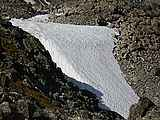 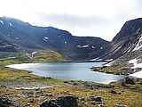 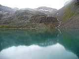
…Нет, мы не проспали – мы просто не собирались назначать время выхода, так
что встали, как и собирались, когда выспались! Опять же, я проснулся
потому, что попал коленом в лужу. В спальнике. М-да…
Примерно час нам показывали солнце, благодаря этому мы сделали серию
фотографий и от души порадовались жизни.
Потом было сворачивание лагеря, дружные вздохи по поводу «вот все съели, а
рюкзаки стали только тяжелее» – еще бы, с мокрыми-то пуховками, зимними
спальниками, палаткой и веревкой! – и путь вниз. Теперь только вниз,
перевал Чойган-Дабан, в общем-то, не считается, он по всем ТТХ здорово
похож на подъем в Темную Падь…
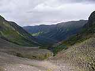 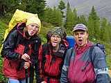 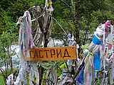
И слайды. Это не передать словами, это не передать фотографией, это просто
надо ощущать, слово «видеть» тут неуместно.
Цветы – и безумные горные цепи в снегу. Реки, сбегающие с перевалов.
Изумрудно-зеленые озера, в которых отражаются снежники и скалы. Радуга,
под которую можно было зайти, к любому концу которой можно было подойти и
потрогать тот камень, под которым должен быть горшок золота – вся эта
радуга, от одного края до другого, около 20 метров…
КРЕАТИФФ
Финальным аккордом стало поедание черники уже на подходах к источникам.
На источниках все по-прежнему: ванна, чашечка кофе, ряд ценных табличек и
приношений (тут невозможно выложить все фотографии, просите у Hewlett),
ужин, на ночь читаем «Евгений Онегин», спорим о кризисе среднего возраста,
все, в общем, хорошо…
Лирическое отступление: одна из табличек безусловно должна быть тут
увековечена. На разных источниках указатели, от чего они помогают (печень,
сердце etc) – и все это великолепие гордо венчает следующий креатифф.
День девятый
Ну?
Двенадцать раз!
А она?
А она вообще не пришла…
© Анекдот детский, старый, грустный
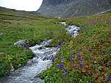 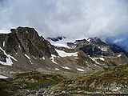 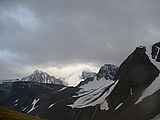
Медленно ползем на перевал. Переползаем, спускаемся вниз. Ставим палатки,
сидим, ждем. Кроме нас сидят: группа из Уфы (около 15 человек), группа из
Иркутска (2 человека), группа откуда-то еще (несколько человек + еще
несколько в пути, они не на выход, а на заход). Еда осталась у заходящей
группы, и у остальных, конечно – у нас на один ужин и один завтрак, у Уфы
– на один ужин, у двоих иркутян – как у нас.
Часов в девять вечера подъезжает пара коней, на одном проводник, на
втором… ну, вы поняли :) Наш храбрый московский участник Игорь спасся.
Проблема в том, что его проводник, Баир, принес слух, что машина-де
сломалась. Вот тут мы начали волноваться, потому что, во-первых, нечего
жрать, во-вторых, пешком идти дня три, и – для финализации – на дворе
вечер пятницы, а в понедельник всем на работу.
Примерно полтора часа я имитировал бурную умственную деятельность (то есть
мы вырабатывали варианты спасения), а на самом деле все это время смирялся
с мыслью, что опоздаю на работу дня на три. Как только пришло смирение, за
углом зажужжал дизель и на поляну въехали здоровенный бортовой «Урал» в
сопровождении уже знакомого ЗИЛ-131. А мы уже планировали, кого будем
первого «в чердак и схарчить»… :)
День десятый
Возвращаемся мы, словно некуда деться…
© В.С. Высоцкий
…и это тоже был очень хороший день!
© та же самая книга
Про день выезда всегда трудно писать. Это состояние «полной сбычи мечт»,
когда уже или все удалось, или не удалось, но многое поздно – и все равно
хорошо. Еще не началась оценка и переоценка процесса, еще слишком много
впечатлений, они толкаются локтями в голове и мешают думать о чем-либо,
кроме еды :)
Краткие зарисовки процесса «выброски».
…«Урал»-сафари. Поскольку мы к моменту переезда через болото уже ехали в
три машины (наших две плюс вахтовка с Хойто-Гола), мужики-водители ваапщче
ничего не боялись :) Выстроив два «Урала» и один ЗИЛ в ряд на краю болота,
эти крепкие парни зажужжали, поддали газу и ломанулись напролом. Это
ощущение я не забуду никогда – наверное, на Курской дуге было круче, но
вот где в наши дни взять такую квинтэссенцию безудержной механической
мощи?
…«Урал», ревя мотором, прет через болото. Проваливается в канаву, по самые
мосты. Натурально перебирает лапами (колеса движутся вверх-вниз совершенно
спорадически, на первый взгляд – даже независимо друг от друга),
выкарабкивается из канавы, поднимая фонтаны грязи, еле-еле видный в дыму,
который сам же испускает во все стороны. Ломит по болоту дальше, роняя
бампером деревца до 10 сантиметров в диаметре. Второй подрезает его, так
же проваливаясь по бампер в лужи, ревя двигателем… они на какой-то момент
выравниваются, идут «голова к голове», а потом ЗИЛ их обгоняет на
полкорпуса – и больше вообще ничего не понятно, потому что уже не только
фотографировать из кузова, но и смотреть невозможно, приходится держаться
руками, ногами, да еще и вставать в распор :)
…В Орлике пытаемся купить еды. В магазине есть только печение, но безумно
хочется колбасы…
…Свечи на Юриной «восьмерке» не выдерживают бензина с заправки в Кырене,
Юра нервно меняет их и отказывается заправлять бензин на заправке в
Орлике. Впрочем, это просто невозможно: никакого топлива, кроме «АИ-80» и
«ДТ летнее» на заправке нет…
…Перевал высотой около двух километров, перед тем, как спуститься в ущелье
Иркута и двинуть в Монды, просто безумно красив. Почему мы не остановились
и не сфотографировали? Сам не понимаю… Фотографируем в районе Мунки все,
что попало, но эффект уже не тот…
…Позная на посту ДПС, на стрелке с Белым Иркутом. Хочется кушать.
– Нам (лихорадочный подсчет) 21 порцию поз!
– Поз нет…
– Мы подождем!
– Бесполезно, воды нет…
– Мы принесем!
– Не надо. Фарша нет…
– /вырезано цензурой/ Давайте все остальное!!!
…Половина первого ночи. Култукский тракт. Я – пытаюсь не спать за рулем.
Hewlett – умудряется не только не спать сама, но и будить меня
разговорами. Выпита вторая бутылка кока-колы. Все еще хочется есть…
Через пару дней, в городе, у ноутбука с фотографиями:
– А вот если через год, дней на десять, предметно на Топографов?
– И с досками! До поворота на Хойто-Гол, а потом вверх по реке!
– Да. Заметано…
Продолжение следует, соучастники приветствуются, встреча назначена на июль
2007.
Спасибо за (со) участие, доверие, тепло и компанию – Ане, Оле, Юле, Юре,
Наташе.
Андрей Лесных (Galmir)
Фотографии
© Юлия Фадеева (hewlett)
26 сентября 2006
|